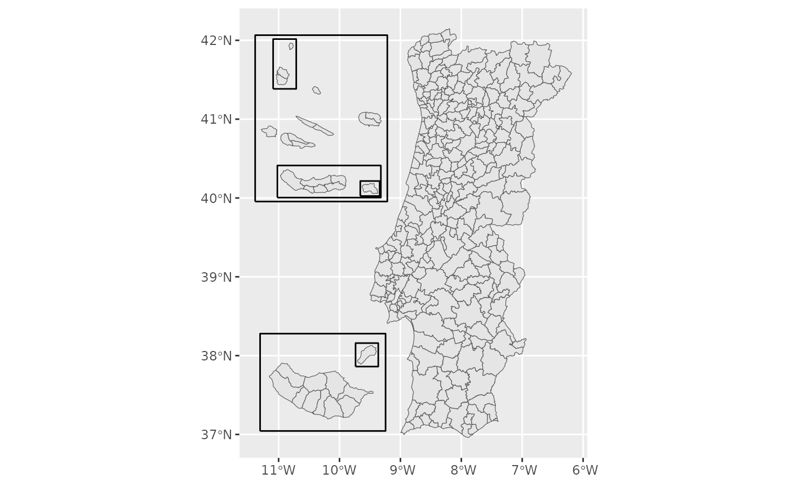
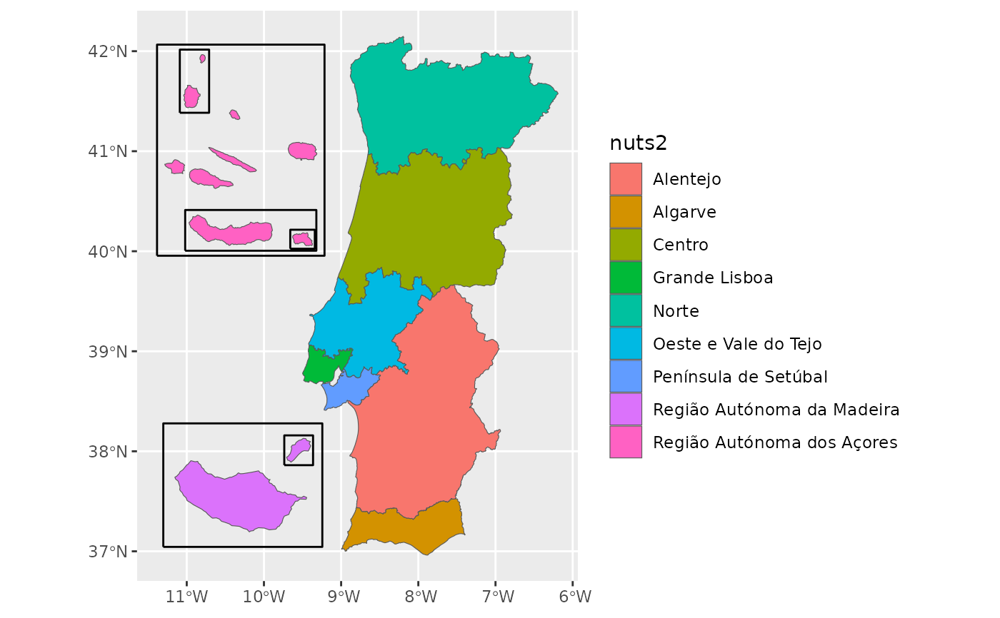
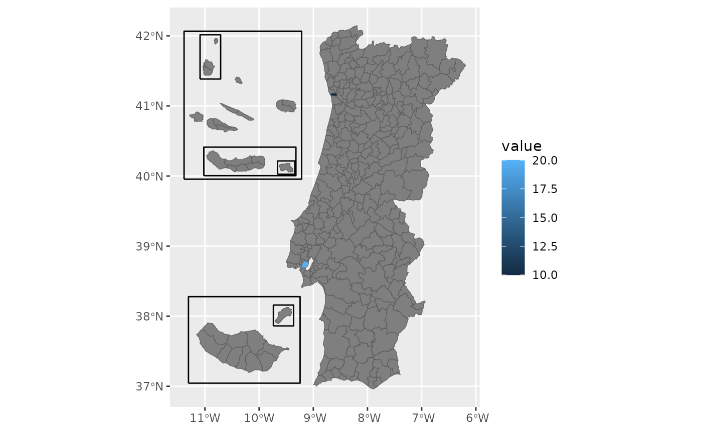

Returns an sf object with mainland Portugal and the islands moved next to it as insets, ready for plotting. Uses the pre-simplified bundled datasets.
Usage
get_map(
level = "municipio",
islands = "compact",
data = NULL,
by = NULL,
fuzzy = FALSE,
aliases = NULL,
admin_vintage = NULL,
nuts_vintage = NULL,
client = NULL
)Arguments
- level
Administrative level:
"freguesia","municipio","distrito","nuts1","nuts2","nuts3"— or one of the health geographies dissolved from freguesias via pt_health_codes:"uls","reg_saude"(regiões de saúde) for the 2024 reform, or"aces". If you have data by municipality, you might need"uls_municipio"and"aces_municipio": the units that share a municipality are merged into one (seevignette("health-geographies")). Health levels are defined on the 2025 map only.- islands
How to show the Açores and Madeira:
"compact"(the default),"groups","box","in_place"or"none"(mainland only), or a layout made withisland_layout()for anything else, such as a different setting per archipelago or no frames.- data
Optional data.frame to join onto the boundaries, producing a map ready for a choropleth. Requires
by.- by
How to join
data: which column identifies the unit and what it contains. Same forms aspt_join(). The unit keyword must correspond tolevel. Rows ofdatafor an archipelago left out with"none"are dropped without a warning.- fuzzy
Logical. Enable fuzzy name matching for the join (see
pt_match()). DefaultFALSE.- aliases
Optional named character vector of extra name aliases for the join (see
pt_match()).- admin_vintage
Which freguesia map to draw. Available values are
"2025"(the default, the bundled data) or"2013", the map in force from the 2013 reform until freguesias were restored in 2025. The 2013 map is downloaded from DGT (CAOP 2024, the last release that used the 2013 freguesias division), simplified and cached the first time, which needs the rmapshaper package and an internet connection. For"2011"and"2001"maps, use INE's BGRI by merging census areas of that year instead (seeget_censos()), or convert the data withpt_recode(). Names indataare matched against this vintage. Seevignette("vintages").- nuts_vintage
Which NUTS revision to use:
"2024"(the default),"2013"or"2002". Independent ofadmin_vintage, because every revision groups whole municipalities.- client
Optional GeoClient to download and cache with (for a custom cache directory).
Details
Every result has the same columns, in the same order, whatever the
options: the level's own columns (and any joined data), then
geopt_type, geopt_label and geopt_frame_level, then the geometry.
geopt_type is "boundary" for the regions and "frame" for the frames
drawn around the insets (see island_layout()). geopt_label holds a
frame's name, or the label of an archipelago drawn as a rectangle
(islands = "box").
For a map of one region, filter the result: rows keep their codes and
names. For an archipelago, use islands = "in_place" first, so it is in its
true position rather than moved and enlarged.
Examples
library(ggplot2)
m <- get_map("municipio")
ggplot(m) + geom_sf()
#> Warning: 'x' is NULL so the result will be NULL

# Mainland only
m <- get_map("municipio", islands = "none")
# Regions and frames drawn separately
m <- get_map("nuts2")
ggplot() +
geom_sf(data = m[m$geopt_type == "boundary", ], aes(fill = nuts2)) +
geom_sf(data = m[m$geopt_type == "frame", ], fill = NA, linewidth = 0.5)

# The archipelagos as labelled rectangles
get_map("nuts3", islands = "box")
#> Simple feature collection with 26 features and 11 fields
#> Geometry type: MULTIPOLYGON
#> Dimension: XY
#> Bounding box: xmin: -10.25053 ymin: 36.96188 xmax: -6.189159 ymax: 42.1482
#> Geodetic CRS: WGS 84
#> First 10 features:
#> nuts3_cod nuts3 nuts2_cod nuts2 nuts1_cod nuts1
#> 1 PT111 Alto Minho PT11 Norte PT1 Continente
#> 2 PT112 Cávado PT11 Norte PT1 Continente
#> 3 PT119 Ave PT11 Norte PT1 Continente
#> 4 PT11A Área Metropolitana do Porto PT11 Norte PT1 Continente
#> 5 PT11B Alto Tâmega e Barroso PT11 Norte PT1 Continente
#> 6 PT11C Tâmega e Sousa PT11 Norte PT1 Continente
#> 7 PT11D Douro PT11 Norte PT1 Continente
#> 8 PT11E Terras de Trás-os-Montes PT11 Norte PT1 Continente
#> 9 PT150 Algarve PT15 Algarve PT1 Continente
#> 10 PT191 Região de Aveiro PT19 Centro PT1 Continente
#> area_ha n_municipios geopt_type geopt_label geopt_frame_level
#> 1 221884.2 10 boundary <NA> NA
#> 2 124579.1 6 boundary <NA> NA
#> 3 145136.5 8 boundary <NA> NA
#> 4 204126.9 17 boundary <NA> NA
#> 5 292190.8 6 boundary <NA> NA
#> 6 183151.5 11 boundary <NA> NA
#> 7 403157.7 19 boundary <NA> NA
#> 8 554359.6 9 boundary <NA> NA
#> 9 499679.5 16 boundary <NA> NA
#> 10 169286.0 11 boundary <NA> NA
#> geometry
#> 1 MULTIPOLYGON (((-8.519346 4...
#> 2 MULTIPOLYGON (((-8.792077 4...
#> 3 MULTIPOLYGON (((-8.440636 4...
#> 4 MULTIPOLYGON (((-8.789006 4...
#> 5 MULTIPOLYGON (((-7.325235 4...
#> 6 MULTIPOLYGON (((-8.379446 4...
#> 7 MULTIPOLYGON (((-7.8885 41....
#> 8 MULTIPOLYGON (((-6.326651 4...
#> 9 MULTIPOLYGON (((-7.569614 3...
#> 10 MULTIPOLYGON (((-8.746029 4...
# The Açores in their three official groups, no frames
get_map("municipio", islands = island_layout(raa = "groups", frames = FALSE))
#> Simple feature collection with 308 features and 15 fields
#> Geometry type: GEOMETRY
#> Dimension: XY
#> Bounding box: xmin: -11.98491 ymin: 36.96188 xmax: -6.189159 ymax: 42.1482
#> Geodetic CRS: WGS 84
#> First 10 features:
#> dtmn municipio dt distrito_ilha nuts1_cod nuts1 nuts2_cod
#> 1 0101 Águeda 01 Aveiro PT1 Continente PT19
#> 2 0102 Albergaria-a-Velha 01 Aveiro PT1 Continente PT19
#> 3 0103 Anadia 01 Aveiro PT1 Continente PT19
#> 4 0104 Arouca 01 Aveiro PT1 Continente PT11
#> 5 0105 Aveiro 01 Aveiro PT1 Continente PT19
#> 6 0106 Castelo de Paiva 01 Aveiro PT1 Continente PT11
#> 7 0107 Espinho 01 Aveiro PT1 Continente PT11
#> 8 0108 Estarreja 01 Aveiro PT1 Continente PT19
#> 9 0109 Santa Maria da Feira 01 Aveiro PT1 Continente PT11
#> 10 0110 Ílhavo 01 Aveiro PT1 Continente PT19
#> nuts2 nuts3_cod nuts3 area_ha n_freguesias
#> 1 Centro PT191 Região de Aveiro 33527.44 15
#> 2 Centro PT191 Região de Aveiro 15882.49 6
#> 3 Centro PT191 Região de Aveiro 21663.49 10
#> 4 Norte PT11A Área Metropolitana do Porto 32910.51 16
#> 5 Centro PT191 Região de Aveiro 19757.58 10
#> 6 Norte PT11C Tâmega e Sousa 11500.52 9
#> 7 Norte PT11A Área Metropolitana do Porto 2105.67 5
#> 8 Centro PT191 Região de Aveiro 10817.34 6
#> 9 Norte PT11A Área Metropolitana do Porto 21587.64 28
#> 10 Centro PT191 Região de Aveiro 7347.56 4
#> geopt_type geopt_label geopt_frame_level geometry
#> 1 boundary <NA> NA MULTIPOLYGON (((-8.249194 4...
#> 2 boundary <NA> NA MULTIPOLYGON (((-8.606468 4...
#> 3 boundary <NA> NA MULTIPOLYGON (((-8.311495 4...
#> 4 boundary <NA> NA MULTIPOLYGON (((-8.32016 40...
#> 5 boundary <NA> NA MULTIPOLYGON (((-8.632433 4...
#> 6 boundary <NA> NA MULTIPOLYGON (((-8.23713 41...
#> 7 boundary <NA> NA MULTIPOLYGON (((-8.611502 4...
#> 8 boundary <NA> NA MULTIPOLYGON (((-8.599495 4...
#> 9 boundary <NA> NA MULTIPOLYGON (((-8.477484 4...
#> 10 boundary <NA> NA MULTIPOLYGON (((-8.746029 4...
# Join your own data by municipality name
df <- data.frame(concelho = c("Porto", "Lisboa"), value = c(10, 20))
m <- get_map("municipio", data = df, by = c(municipio = "concelho"))
#> get_map: 306 boundaries have no data row (NA fill).
ggplot(m) + geom_sf(aes(fill = value))
#> Warning: 'x' is NULL so the result will be NULL

# The NUTS 3 regions of the 2013 revision (25, against 26 today)
get_map("nuts3", nuts_vintage = "2013")
#> Simple feature collection with 35 features and 11 fields
#> Geometry type: GEOMETRY
#> Dimension: XY
#> Bounding box: xmin: -11.38491 ymin: 36.96188 xmax: -6.189159 ymax: 42.1482
#> Geodetic CRS: WGS 84
#> First 10 features:
#> nuts3_cod nuts3 nuts2_cod nuts2 nuts1_cod nuts1
#> 1 PT111 Alto Minho PT11 Norte PT1 Continente
#> 2 PT112 Cávado PT11 Norte PT1 Continente
#> 3 PT119 Ave PT11 Norte PT1 Continente
#> 4 PT11A Área Metropolitana do Porto PT11 Norte PT1 Continente
#> 5 PT11B Alto Tâmega PT11 Norte PT1 Continente
#> 6 PT11C Tâmega e Sousa PT11 Norte PT1 Continente
#> 7 PT11D Douro PT11 Norte PT1 Continente
#> 8 PT11E Terras de Trás-os-Montes PT11 Norte PT1 Continente
#> 9 PT150 Algarve PT15 Algarve PT1 Continente
#> 10 PT16B Oeste PT16 Centro PT1 Continente
#> area_ha n_municipios geopt_type geopt_label geopt_frame_level
#> 1 221884.2 10 boundary <NA> NA
#> 2 124579.1 6 boundary <NA> NA
#> 3 145136.5 8 boundary <NA> NA
#> 4 204126.9 17 boundary <NA> NA
#> 5 292190.8 6 boundary <NA> NA
#> 6 183151.5 11 boundary <NA> NA
#> 7 403157.7 19 boundary <NA> NA
#> 8 554359.6 9 boundary <NA> NA
#> 9 499679.5 16 boundary <NA> NA
#> 10 222015.5 12 boundary <NA> NA
#> geometry
#> 1 MULTIPOLYGON (((-8.519346 4...
#> 2 MULTIPOLYGON (((-8.792077 4...
#> 3 MULTIPOLYGON (((-8.440636 4...
#> 4 MULTIPOLYGON (((-8.789006 4...
#> 5 MULTIPOLYGON (((-7.325235 4...
#> 6 MULTIPOLYGON (((-8.379446 4...
#> 7 MULTIPOLYGON (((-7.8885 41....
#> 8 MULTIPOLYGON (((-6.326651 4...
#> 9 MULTIPOLYGON (((-7.569614 3...
#> 10 MULTIPOLYGON (((-9.072828 3...